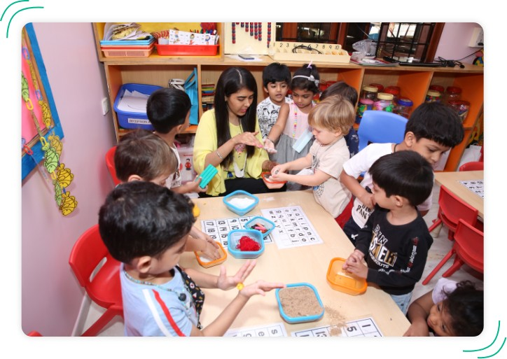

Early Years Program
The aim of
the IELC curriculum is to provide a transdisciplinary
curriculum which is engaging, exciting, challenging and relevant to the
children, who fall into the age bracket of one to six years. It focuses on
the whole growth of the developing child, touching hearts as well as minds
and encompassing social, physical, emotional, cognitive and cultural needs
in addition to academic development. At IELC, our IB inspired curriculum
or program prepares children to become active, caring, lifelong learners
who demonstrate respect for themselves and others and have the capacity to
participate in life and the world around them. It focuses on the
development of the whole child as an inquirer, both within and beyond the
classroom.
At Indus we
believe that every child is altruistic and has the potential
to change the world, for the better. We strongly emphasize the holistic
development of a child. This journey begins in the early years by
nurturing competencies and skills as listed below:
1) Tikkun Olam
Children don't simply observe the world, they also imagine how it could be
different, hence the concept of Tikkun Olam or heal the world, nurtures
empathy and also gives them a personal vision. The vision is decided by
the child and facilitated by teachers and parents.
2) Deep Reading
Is an
approach that helps develop perspective thinking, builds character,
morals, and values; and also fosters moral imagination. Reflecting on
fictional or nonfictional stories, can be a powerful force to get children
to engage with a character’s life and emotions, and cultivating
empathy.
3) Junk Yard Philosophy
Einstein said, "Imagination is more important than knowledge", because
imagination opens the door to creativity and innovation. This can be
achieved through the Israeli concept of a Junkyard. When children play
with each other with junk, household items and scrap materials; they
manipulate materials, express themselves verbally and non-verbally, plan,
act, interact, react, and try different roles. This encourages them to
become independent thinkers, risk takers, decision makers and also
conflict resolvers.
4) Biophilia
With the advent of technology, students are spending most of the time
indoors and are experiencing a nature deficit disorder. Reconnecting with
nature (Biophilia) is another way to foster empathy, a sense of
responsibility, resilience and also creativity. The benefits of connecting
with nature are immense - it fosters their intellect through inquiry and
experimentation - bringing out the scientist in them. The curriculum
encourages children to ask questions, plan investigations, explore various
outcomes, and reach logical conclusions, with teachers as facilitators.
For older children from ages 4 to 6 the curriculum has a strong focus on
conceptual learning and development of leadership
The curriculum encourages children to ask questions, plan investigations,
explore various outcomes, and reach logical conclusions, with teachers as
facilitators. For older children from ages 4 to 6 the curriculum has a
strong focus on conceptual learning and development of leadership skills.
Children engage in a transdisciplinary curriculum that meets international
benchmarks.

Nursery
In Nursery Programme, a broad-based curriculum integrates a genuine
love for learning through stories and language and expression, along
with a focus on numerical concepts and exploration of the world
around them. This thorough foundation is underpinned by a strong
commitment to the social, emotional and cultural awareness of each
child and realized through a creative and interdisciplinary approach
to teaching and learning. Arts, sports, music and dance are
seamlessly incorporated into the curriculum, affording
multi-sensorial and comprehensive learning opportunities.
The primary focus is to help children gain independence socially,
physically and emotionally whilst giving them opportunities to
develop their linguistic, mathematical, creative and cognitive
skills and helping them explore the world around them and orient
themselves with the environment. We follow an inquiry-based approach
that facilitates children’s curiosity and experiential form of
learning, that goes beyond academics, catering to students’
signature strengths.
Reception
Our Reception programme caters to students from ages 3 years to 4
years. The curriculum encourages children to ask questions, plan
investigations, explore various outcomes, and reach credible and
logical conclusions, with teachers as facilitators. The curriculum
is a balanced blend of five essential aspects: concepts, knowledge,
skills, attitudes and action.
Language Development in our Reception is encouraged through active
engagement with the three strands of language- oral language, visual
language and written language. Logical thinking and numeracy skills
are developed through an application-based approach through five
strands, namely, Number System, Data Handling, Measurement, Pattern
& Function and Shape & Space. Social and emotional growth is
nurtured through our unique leadership curriculum that balances
development of the Intelligence and emotional quotient. The innate
creativity and curiosity of students is further nurtured through our
music and movement programme and creative arts curriculum.
PP1
In Prep One, we construct an environment and pedagogy that is
secure and enriched, where students are encouraged to become
lifelong learners, both inside and outside the classroom. With a
strong focus on conceptual learning and development of leadership
skills, children engage in a transdisciplinary curriculum that meets
international benchmarks for Literacy, Numeracy, Science, Social
Studies and PSPE (Personal, Social and Physical Education).
Emphasis is placed on the acquisition of communication and thinking
skills through a culture that encourages learner agency. The
leadership curriculum at Indus plays a pivotal role in progressing
toward our aim of unlocking the individual child’s potential.
Leadership is developed by encouraging self-awareness, thereby
enabling students to discover their complete range of multiple and
emotional intelligences. Sports, community involvement, fine &
performing arts and robust outdoor activities lend themselves to the
fostering of leadership qualities. The focus is on connecting to
self, connecting to nature and connecting to the community.
PP2
We offer the Prep 2 Programme for children aged 5 to 6 years of
age. The core skills we help students to imbibe and strengthen are
critical thinking, communication, collaboration and creativity. The
Prep Two environment is warm and inspiring, filled with wonderful
learning materials. We believe in following the child and helping
them in attaining their potential capabilities. We endeavor to
create a strong community where every child’s developmental needs
are met and they truly experience the joy of learning.
Prep Two has a distinct curriculum that is designed to challenge
and nurture a child’s multiple intelligences and diverse aptitudes
and talents, to help them unlock their hidden potential. Learnings
in the early year’s program have core language development, units of
enquiry with science and social studies as the foundation, second
language exposure to Hindi and Spanish, dedicated reading programs
that are levelled according to a child’s abilities, Math, Music and
Keyboard, Physical Education, Yoga, Coding & SEN/ESL (Special
education needs & English as Second Language).
Special Education Needs (SEN)
Indus
Early Learning Centre, Jubilee hills prides itself on being an
inclusive School. We strive to cater to the diverse needs of students by
ensuring that each student gets equitable access to the learning
curriculum.
Additional Language
Our
School is a place where we value the importance of effective
communication within and beyond the classroom.
Effective communication defines how we think and learn and is a means to
achieve a healthy global and local perspective that will enable the
integration of additional languages. The teachers work in active
collaboration with homeroom and other specialist teachers to support the
learning. Our learning engagements are planned in a way to build
confidence and improve skills in reading, writing, speaking and
listening.
English as a Second Language (ESL)
Our
students come from diverse cultures, religions and creeds. They
live and study together at a top boarding School. They make long lasting
friendships which continue way beyond their School years.
Our
School is a place where we value the importance of effective
communication within and beyond the classroom. Effective communication
defines how we think and learn and is a means to achieve a healthy
global and local perspective.
Our ESL
teachers are all language teachers. Together, they help our
students become confident in their English skills, which is the common
language used in the school. They appreciate that students learn in
different ways and therefore use a wide range of teaching methods.
Students
with limited English language receive a combination of
‘pull-out’ and ‘push-in’ learning support, depending on their level of
proficiency. The IISB ESL support programme promotes academic English
proficiency that will enable the integration of ESL students into the
mainstream curriculum in no less than two years. ESL teachers work in
active collaboration with homeroom and other specialist teachers to
support them.
Our
courses are designed to build confidence and improve skills in
reading, writing, speaking and listening. We also support our students
in increasing their understanding of Science, Math, History and
Economics. The courses provide students with opportunities to discover
their self-worth through a range of enrichment activities.